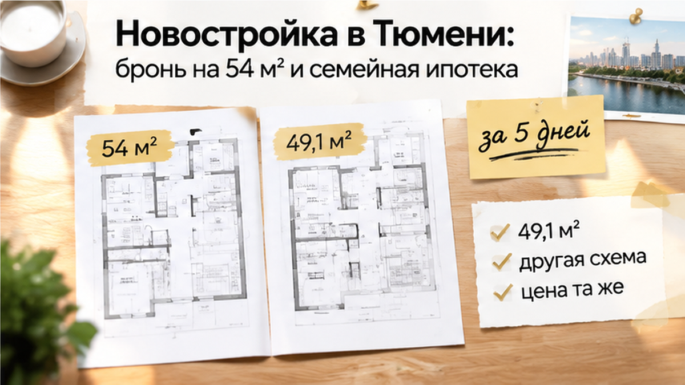
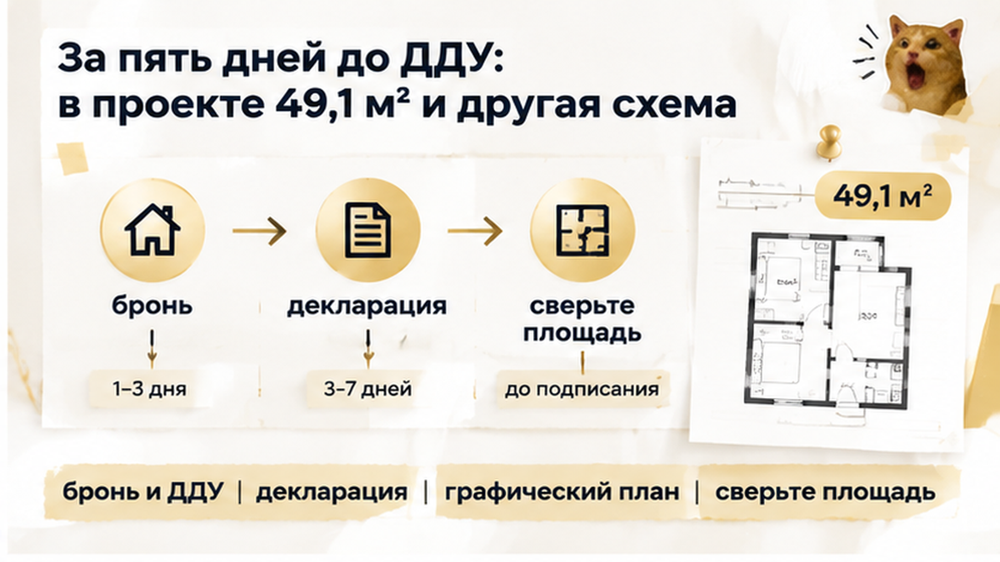
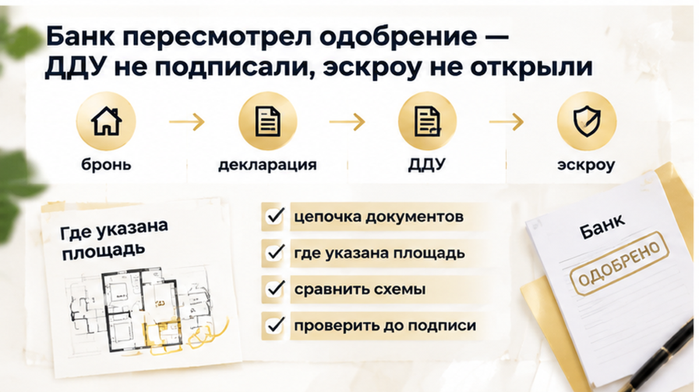

За пять дней до подписания ДДУ семья в Тюмени увидела: вместо обещанных 54,2 м² в документах стоит 49,1 м², а цена квартиры не изменилась. Бронь уже оплачена, в планах — семейная ипотека и переезд с ребёнком. Ещё недавно в офисе показывали лоджию, две комнаты и понятную планировку. Теперь на столе лежал лист с другой конфигурацией, а менеджер говорил: «Это та же квартира, площадь пересчитаем по БТИ». Покажу, на каком месте в такой ситуации лучше остановиться, пока ДДУ не подписан и эскроу не открыт.
Разбираю такие ситуации с новостройками Тюмени в Telegram и MAX: что проверить до подписи и где остановиться, пока деньги ещё можно вернуть по условиям сделки.
Семья выбирала квартиру в новостройке Тюмени для жизни. Ребёнку нужна была отдельная комната, поэтому площадь около 54 м² была не просто цифрой в объявлении. От неё зависел весь выбор.
В офисе показали вариант примерно на 54,2 м² с лоджией. После просмотра семья внесла за бронь ориентировочно 80–150 тысяч рублей. Вернут ли эту сумму, зависит от соглашения о бронировании, а не от устного обещания менеджера.
Одновременно готовились к семейной ипотеке. Здесь меняется не только планировка на листе. Банк смотрит на сам проект сделки, будущий ДДУ, цену, размер первоначального взноса и сумму кредита.
Обычный взгляд: «Ну, несколько метров уточнят позже». Профессиональный вопрос другой: какая именно квартира сейчас является предметом сделки и совпадают ли её характеристики во всех документах?
Бронь не заменяет ДДУ и сама по себе не делает показанную планировку гарантированной. Но до подписания договора у семьи ещё оставалось время спокойно сверить документы и решить, продолжать ли сделку.
В офисе разговор шёл о конкретной квартире. Сотрудник показывал визуализацию и план: около 54,2 м², лоджия, две комнаты. Для семьи было важно не только число в заголовке предложения.
Они смотрели, где поставить мебель, как будет спать ребёнок и можно ли разделить пространство на привычные комнаты. Лоджия на изображении тоже воспринималась как часть понятной покупателю планировки.
«Мы же видели именно это?» — такой вопрос появляется, когда проект ДДУ выглядит иначе. И ответ здесь должен быть не только устным.
До подписи нужно сравнить графический план и описание объекта в самом ДДУ, сведения в проектной декларации и способ, которым застройщик считает площадь. Похожие обозначения ещё не означают одинаковый состав помещений.
Визуализация помогает выбрать квартиру. Но если важная характеристика повлияла на решение о покупке, её нужно искать в документах или просить письменное объяснение расхождения.
Устный ответ менеджера — начало разговора, но не замена условиям договора.

За пять календарных дней до подписания ДДУ семье передали лист из декларации и экспликацию. В них стояла площадь 49,1 м² — почти на пять квадратных метров меньше прежнего ориентира.
Изменилась и конфигурация. Это была уже не та схема, которую показывали в офисе и на визуализации. При этом цена квартиры не снизилась.
Менеджер объяснил: «Это та же квартира, площадь пересчитаем по БТИ».
Но БТИ определяет параметры готового объекта. Оно не отвечает на вопрос, почему до ДДУ покупателю показывают одну площадь, а в проекте и связанных документах появляется другая.
До подписи нужно понять, что именно входит в предмет сделки сейчас: какая площадь указана, какие помещения изображены на плане и совпадает ли эта версия с расчётами банка.
Пока договор не подписан и эскроу не открыт, у покупателя есть возможность не переходить дальше, если письменные объяснения и документы не складываются в одну картину.
После появления площади 49,1 м² вопрос был уже не только в том, удобно ли семье жить в другой планировке. В обсуждении покупки фигурировала квартира около 54,2 м², а в проекте ДДУ — другая площадь и другая схема.
Банк повторно посмотрел проект договора. Это не означает автоматический отказ: банк проверяет конкретный объект, цену, документы и условия кредита. Но при изменении параметров сделки могла понадобиться другая сумма первоначального взноса или дополнительная пауза на проверку.
Семья не стала подписывать ДДУ в надежде, что всё потом «пересчитают по БТИ». Эскроу не открыли.
Бронь отменили по условиям соглашения о бронировании. Именно там нужно смотреть порядок возврата внесённых денег, поэтому обещать полный возврат заранее нельзя.
Остановиться в этот момент оказалось дешевле, чем сначала подписать договор, а потом выяснять, что именно куплено и за какую цену. В такой ситуации я бы просил письменное объяснение, актуальную редакцию проекта ДДУ и понятную схему площади.
Подписали бы ДДУ с обещанием пересчитать площадь по БТИ или сразу сняли бы бронь?
Перед ДДУ банк может пересмотреть условия одобрения — поэтому проект договора лучше показать банку до даты подписи, а не после внесения всех денег.
Такие истории разбираю в каналах без рекламного шума — подпишитесь в Telegram и MAX, чтобы не пропустить разбор документов до подписи ДДУ.

Перед авансом соберите документы в одну папку. Сравнивайте их не по названию квартиры, а по признакам: номер, этаж, секция, план, общая площадь и состав помещений.
По 214-ФЗ площадь и графический план должны быть частью понятного описания объекта в ДДУ, а цена — согласованной частью договора.
БТИ определяет параметры уже готового объекта. Ссылка на будущий пересчёт не отвечает на вопрос, почему перед подписанием покупателю показывают одну площадь, а в проекте договора появляется другая.
В ДДУ важны не только слова менеджера, но и то, что написано в документах. Если бронь и проектная декларация расходятся, сделку лучше поставить на паузу до письменного объяснения и новой согласованной редакции договора.
До подписи задача не в том, чтобы найти красивое объяснение расхождению. Задача — понять, совпадают ли предмет сделки, цена и условия кредита.

Число на рекламной планировке помогает выбрать квартиру, но не заменяет договор. В этой истории рядом оказались 54,2 м² с лоджией и 49,1 м² в документах.
Сопоставьте не только цифры, но и состав площади, схему комнат и номер лота. Иначе спор о метрах быстро превратится в спор о том, какая квартира вообще была предложена.
| Документ или материал | Что в нём проверить | Чего он не заменяет |
|---|---|---|
| Визуализация и планировка из офиса | Какая площадь указана, включена ли лоджия, как расположены комнаты. | Графический план и условия будущего ДДУ. |
| Соглашение о бронировании | Как обозначена квартира, какие характеристики записаны, что предусмотрено при отмене брони и возврате оплаты. | Согласование всех характеристик квартиры в договоре покупки. |
| Проектная декларация в ЕИСЖС на портале ДОМ.РФ | Сведения о проекте и их согласованность с документами, которые выдали перед подписанием. | Приложение к ДДУ с графическим планом конкретной квартиры. |
| Проект ДДУ и его приложения | Площадь, конфигурация, цена, описание лоджии и условия возможного пересчёта. | Письменное объяснение уже обнаруженных расхождений. |
| Документы по обмерам готового объекта | Фактическую площадь и основания для расчётов по условиям договора. | Проверку того, какую квартиру предлагают купить сейчас. |
Разница между двумя цифрами ещё не доказывает, что у квартиры физически исчезли пять метров. Возможно, площадь посчитана по-разному, в том числе из-за лоджии.
Но даже правильный способ подсчёта не объясняет автоматически другую конфигурацию комнат. Если в офисе показывали одну схему, а подписать предлагают другую, нужны отдельные письменные пояснения и согласованные документы. Фразы «это та же квартира» для такой проверки недостаточно.
Статьи 4, 5 и 7 закона № 214-ФЗ задают рамку для условий ДДУ: описания объекта и его графического плана, цены и соответствия установленным требованиям.
Это не означает автоматической скидки при любом расхождении или безусловного возврата всей брони. Условия изменения цены нужно читать в проекте договора, а порядок возврата оплаты — в соглашении о бронировании.
Обещание «пересчитаем по БТИ» относится к обмерам готового объекта. Оно не закрывает вопросы к документам, которые покупатель видит до подписи.
Похожее различие между обещанием и закреплённым условием разобрано в истории, где покупатели ожидали чистовую отделку, а на приёмке увидели голые стены.
Для семьи важна возможность пользоваться квартирой так, как планировали. Для инвестора — характеристики объекта, за который он платит. В обоих случаях решение стоит принимать по согласованной версии документов, которую также рассмотрел банк, а не по прежней картинке.
Если площадь в проекте ДДУ не совпадает с тем, что показывали при брони, я бы не подписывал договор в надежде на будущий пересчёт — сначала письменное объяснение, новая редакция и сверка с банком.